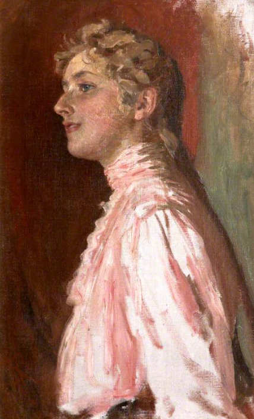
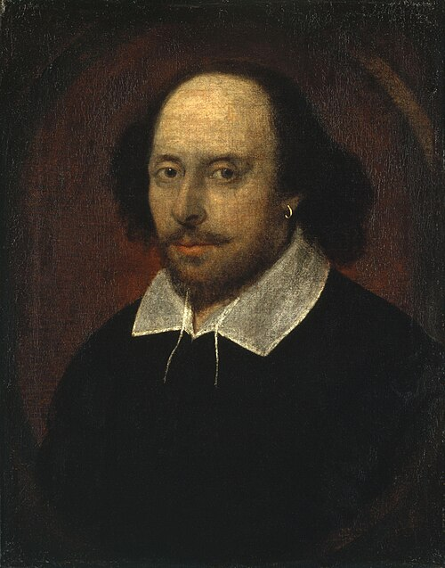
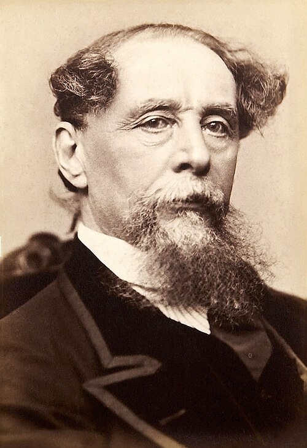
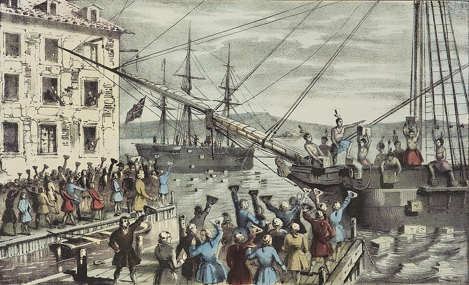
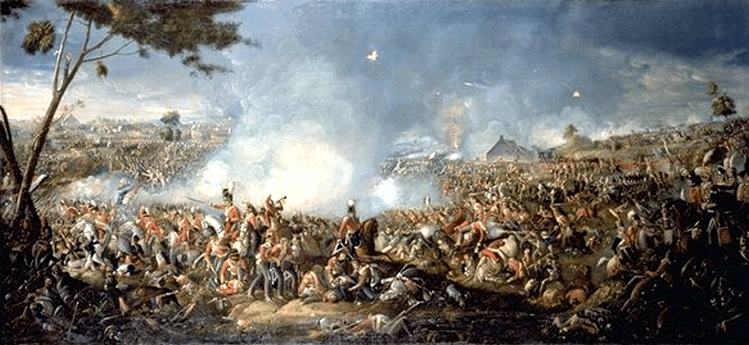
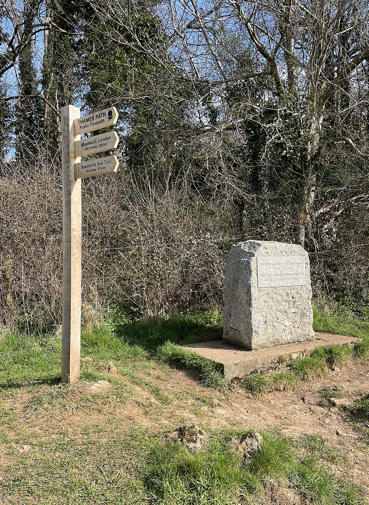
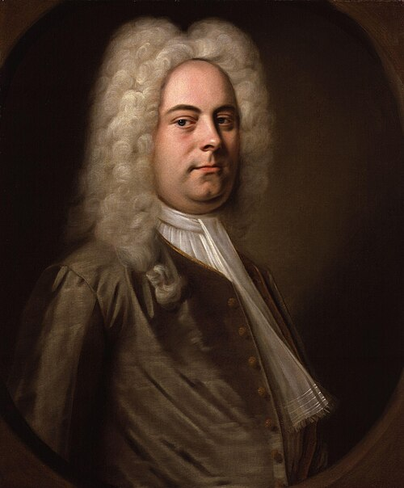
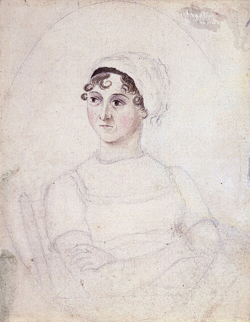

«Высшая проба» Round 2 · the final review: Задания 4, 5, 9 and 10, plus 1, 3 and 8 at home
📅 November 2026 · Lesson 19 · word formation (the Vikings) · sentence ordering (Churchill) · history: all seven eras + the Wars of the Roses, the Boston Tea Party, Waterloo and the Good Friday Agreement · culture: decoding a place, not only a person (the Thames)
Blocks checked: 0 / 0
Points today: 0 / 0
👩🏫 Teacher only · Lesson 19 plan · 60 min (tap to open / close)
The thread: the spine and six faces from memory → Задание 4 on the Vikings → Задание 5 on Churchill → four events taught on cards, the Russian hooks, two full Задание 10 sets, the traps and Olympway 162 → how to decode a place, the Thames card, decode the clue, a full “What is it?” text on the Thames.
0–5 · Warm-up: the eight royal houses + the nine US anchors from memory (3) · six portraits → names (2).
5–18 · Block A, Задание 4: the four questions, a reminder (2) · the Vikings, 5 gaps, timed 5 min (6) · one root, several forms, 6 items (4) · buffer (1).
18–31 · Block B, Задание 5: the link recap (2) · Churchill, 10 of 12 sentences, timed 8 min (8) · every reason aloud (3).
31–34 · Break.
34–48 · History: four event cards (4) · decode the event (2) · the Russian hooks (1) · two Задание 10 sets, 2 min each (4) · the traps (1) · Olympway 162, 7 lines (2).
48–59 · Culture: how to decode a place (1) · the Thames card (4) · decode the clue (2) · What is it? the Thames (4).
59–60 · Homework: open the Homework tab together.
👩🏫 Teacher only · Lesson notes: what this lesson teaches and why (tap to open / close)
1 · Where this lesson sits
This is the last lesson before the round, and it does two jobs at once. It is the final review from the plan (Lesson 11 of the plan): the spine, the culture figures, word formation, sentence ordering and all seven history eras, each in its real exam format. And it is built around the topics Polina heard came up on the paper: Lewis Carroll, the Thames, the Boston Tea Party, the Wars of the Roses, Waterloo (culture and history), a sentence-ordering text on Churchill, “Good Friday” (the Good Friday Agreement) and a word-formation text on the Vikings. Five of those were taught before (Carroll in Lesson 17; the Wars of the Roses in era 2, Lesson 13; the Tea Party in era 5, Lesson 16; Waterloo in era 6, Lessons 17–18; Churchill on the Lesson 18 history card). Two were never taught: the Good Friday Agreement and the Thames as a culture topic. Both are taught on cards here before anything tests them. Nothing on this page tests a fact that is not on this page or on an earlier lesson page.
The new idea of the lesson is in the Culture tab: Задание 9 can describe a place (or an event) instead of a person. Our seven kinds of clue were made for people; for a place they change into: where it starts and ends · size and records · what stands on it · what happened there · people linked to it · works set there · its other names. The Thames text tests exactly that.
2 · Warm-up: the spine and six faces
The eight houses with their first letters given (“No Plan Like Yours To Study History Wisely”): Norman 1066 · Plantagenet 1154 · Lancaster 1399 · York 1461 · Tudor 1485 · Stuart 1603 · Hanover 1714 · Windsor 1901 (the name Windsor since 1917). Plurals are accepted. Then the US anchors: 1492 Columbus · 1607 Jamestown · 1620 the Mayflower · 1776 the Declaration · 1789 Washington · 1803 Louisiana · 1861–65 the Civil War · 1867 Alaska · 1969 the Moon. Then six portraits → names (Carroll, Churchill, Orwell, Christie, Shakespeare, Dickens), with Austen and Wilde as extras in the box. The portraits are on the V14 cards (Churchill on the Lesson 18 history card).
3 · Block A: Задание 4 on the Vikings
The content is what she learned in Lessons 12–13 (Lindisfarne 793, the Danish army of the 860s, Alfred and Wessex, the Varangians), so she reads for form, not for facts. The procedure is the four questions from Lesson 17: part of speech · plural or negative · feeling or cause · spelling. Key: 1 invaders (the subject that jumped is people, and their ships makes it plural; invasion can’t jump) · 2 terrified (the monks feel the fear: -ed) · 3 unpredictable (adjective after completely; nobody knew makes it negative) · 4 skilful (adjective before sailors; British spelling has one l in the middle, skillful is accepted) · 5 settlements (many of their → plural noun; the next sentence says place names, so places, not people). “One root, several forms” then puts the same roots into new sentences: invasion · settlers · fearless · fearful · achievement · cultural. The pair fearless / fearful is the point: the suffix carries the meaning, and the sentence decides.
More practice (after the in-class tasks; homework, or in class if Block A runs fast). One root, four jobs: SUCCESS as verb, adjective, adverb and noun (succeed · successful · successfully · success): the part of speech is decided by to, the most ___ battle, the place between subject and verb, and his ___. -ed / -ing: frightening · frightened · exhausted · confusing · disappointed · disappointing (two pairs on the same root so she can’t answer from the root alone). Negative prefixes, all words met in Lesson 17: impossible · disappeared · unexpected · irregular · invisible · dishonest · illegal; only im- / il- / ir- follow a spelling rule, so the hint says that un-, in- and dis- are learned with the word. A second timed Задание 4 on Alfred the Great (era 1 content): worried · amazement · defences · illiterate · translations (defenses accepted). It covers -ed, -ment, a plural noun, a negative prefix and -tion + plural.
4 · Block B: Задание 5 on Churchill
Twelve sentences, ten places, two extras, as in the real paper. Every place is decided by a link, not by knowing his life. The key is F J B L D H A K C G: F opens (full name, no pronoun) → J however (a palace, but bad at school) → B once he had become a soldier (← the army college) → L his daring escape (← taken prisoner) → D however, the First World War (after the next year … Parliament) → H two years later he was back in government (← resigned), another war → A that war … they turned to him (← the war and the people who would not listen) → K that summer (← May 1940) → C yet, 1945 → G six years later … came back (← voted out). The extras: EShe never forgave him (no woman in the text: “she” links to nothing) and Ihe never stood for Parliament again (the text says he came back as Prime Minister). After Check, a box gives three facts worth keeping for Задание 9 (Blenheim, the Nobel Prize in Literature, “so much owed by so many to so few”). The Culture tab’s decode task uses two of them, so they are taught before they are used.
5 · History: four events, the hooks, two Задание 10 sets, Olympway 162
The four event cards are written the way the culture-figure cards are: what it was, the date, the people, the words a text would use instead of the name (🔎), and a Russian hook. The Wars of the Roses (1455–1485): Lancaster (red) vs York (white), Henry VI, Edward IV, Richard III and the princes in the Tower, Henry Tudor at Bosworth (22 August 1485), Elizabeth of York, the Tudor rose; the name became popular much later (Shakespeare’s garden scene in Henry VI, then Walter Scott); Richard III’s body was found under a Leicester car park in 2012. Hook: 1480 the Ugra / 1485 Bosworth. The Boston Tea Party (16 December 1773): the Tea Act, “No taxation without representation”, some men disguised as Mohawks, 342 chests, the port of Boston closed in 1774 (the Intolerable Acts), 1775 the first shots, 1776 the Declaration. Hook: Pugachev, the same year. Waterloo (18 June 1815): near Brussels in today’s Belgium, Wellington and the Prussian Blücher against Napoleon, the Hundred Days after Elba, St Helena; Waterloo station and bridge, wellington boots, “to meet your Waterloo”, ABBA. Hook: 1812 Napoleon in Moscow. The Good Friday Agreement (10 April 1998), the only new history: Northern Ireland, the Troubles (from the late 1960s, over 3,500 dead), unionists (mostly Protestant, stay in the UK) and nationalists (mostly Catholic, a united Ireland), signed in Belfast, Tony Blair and Bertie Ahern, talks chaired by the American senator George Mitchell, approved by referendums in both parts of Ireland in May 1998, a power-sharing assembly at Stormont, the Nobel Peace Prize for John Hume and David Trimble. Good Friday = Страстная пятница, the Friday before Easter. It is 20th century: the trap is to say 21st because it feels recent.
Decode the event adds two events she knows from earlier eras as distractors (the Gunpowder Plot, Lesson 15; Trafalgar, Lessons 17–18). The Russian hooks are the plan’s pairs plus 1812/1815. Two Задание 10 sets (5 events, 7 centuries, 2 extras each): set 1 Tea Party 18th · Magna Carta 13th · Good Friday Agreement 20th · Gunpowder Plot 17th · Bosworth 15th (not used: 11th, 16th); set 2 Agincourt 15th · the Moon landing 20th · Waterloo 19th · 9/11 21st · the Church of England 16th (not used: 11th, 14th). The traps: 1500 → 15th, 1066 → 11th, 1901 → 20th, 2000 → 20th, 1485 → 15th. Olympway 162 is people → century; only the seven people she was taught are kept: Oliver Cromwell (17th), Anne Boleyn (16th, Elizabeth I’s mother, Lesson 12), George Washington (18th), James Cook (18th), Abraham Lincoln (19th), Queen Victoria (19th), Edgar Allan Poe (19th). Note: the Olympway key gives Cromwell as 16th (he was born in 1599); everything he is known for is 17th century, and the site accepts 17th. Left out because they were never taught: Newton, Mary Queen of Scots, Steve Jobs, Adam Smith, Johnny Depp, Robert Boyle, John Calvin, Schwarzenegger.
6 · Culture: the Thames
The card gives everything the text asks: the source at Thames Head in the Cotswolds (a stone under a tree, often dry: the same stone as the Lesson 10 reading), about 346 km, the longest river entirely in England, into the North Sea through the estuary; at Oxford it is called the Isis (the name of an Egyptian goddess), and that is where Carroll told the Alice story on 4 July 1862; Windsor Castle and Eton; Runnymede and Magna Carta (1215); Hampton Court; in London Westminster, the Tower, Tower Bridge (1894), the Globe on the south bank; Handel’s Water Music (1717); the frost fairs (the last in 1814); the Boat Race (Oxford v Cambridge, since 1829); the Thames Barrier (1980s); Three Men in a Boat (Jerome K. Jerome, 1889). The “What is it?” key: 1 the Thames · 2 the Isis · 3 Magna Carta · 4 the Globe · 5 the North Sea. Only 2 and 5 are hinted at in the text without the name; 3 and 4 need earlier lessons; all five are on the card. The decode-the-clue task mixes the Thames with people who belong to it (Carroll, Shakespeare, Handel, Dickens) and with Churchill from Block B.
7 · Homework and the new deck
New deck V15 “Places & events” (5 cards: the Thames, the Wars of the Roses, the Boston Tea Party, Waterloo, the Good Friday Agreement), built like V14: picture, bio and names to know on the back; the quizzes test the content, not the Russian name. Then a Задание 1 text on Waterloo (key: was forced · was sent · escaped · is known · was fought · Wanting · held · had been defeated · was exiled · has been given), a Задание 3 set on today’s events (key: D · OK · B · F · C), a one-listen Задание 8 talk on the Tea Party (key: F · T · F · F · T; the traps: mainly, exactly, the man who was stopped), a “What is it?” Задание 9 on the Wars of the Roses (key: the Wars of the Roses · Lancaster · Richard III · Bosworth · the Tudors) and the exam-day card: her own time plan for the 60 minutes.
Not in this lesson, for time: the plan’s Who-is-it blitz on all V14 cards, the Задание 2 vocabulary text and Olympway 425 / 302. For the last days: V14 and V15 daily, one sentence-ordering text and one one-listen set every other day, the timeline once more the day before the round.
👩🏫 Teacher only · what to say · warm-up
Hello: “Last lesson before the round. Today nothing is new except two things: one event and one river. Everything else you already know, and we’ll do it in the real formats.”
The spine: “Eight houses, first letters given. Then nine American dates. Three minutes for both.” If she stops on a house, she says the mnemonic aloud.
Six faces: “Six portraits, two names in the box are extra.” For each one she says one work or one 🔎 clue.
Homework check (Orwell, Задание 9): George Orwell · Eric Arthur Blair · Myanmar · Animal Farm · Nineteen Eighty-Four.
Into Block A: “Задание 4. The text is about people you met in Lesson 12: the Vikings.”
Warm-up 1 · the spine from memory · 2 min
Eight royal houses
No Plan Like Yours To Study History Wisely
Type the rest of each house’s name.
1N from 1066
2P from 1154
3L from 1399
4Y from 1461
5T from 1485
6S from 1603
7H from 1714
8W from 1901 (the name since 1917)
Warm-up 2 · the American anchors · 1 min
Nine American dates
the Louisiana Purchasethe Moon landingColumbus reaches Americathe Pilgrims arrive on the MayflowerAlaska is bought from RussiaWashington becomes the first Presidentthe Declaration of Independencethe Civil WarJamestown, the first English colony
Drag an event to a date, or tap an event and then tap the date. Tap a filled date to empty it.
14921
16072
16203
17764
17895
18036
1861–657
18678
19699
Warm-up 3 · six faces · 2 min
Who is it?
Six portraits from your cards. Two names in the box are extra. For each one, say one work or one 🔎 clue aloud.
George OrwellJane AustenWinston ChurchillCharles DickensLewis CarrollOscar WildeWilliam ShakespeareAgatha Christie
Drag a name to a portrait, or tap the name and then the portrait. Tap a filled place to empty it.
1
2
3

4

5

6
👩🏫 Teacher only · what to say · Задание 4
The four questions: “Before you write anything: what part of speech, plural or negative, feeling or cause, spelling. Say them.” She should not need the box; it is there for the first gap.
The text, 5 min: start the timer. After Check, for each gap she names the word on the left or right that decided it (their ships, monks, completely … nobody knew, sailors, many of their … place names).
One root, several forms: “Same roots, new sentences. Watch 3 and 4: the same root, opposite meanings.”
Into Block B: “Задание 5, the 20-point task. Twelve sentences about a man you met on a history card: Churchill.”
A reminder · 2 min
Four questions for every gap
1What part of speech?
Look left and right of the gap.
the / a / their + __ + verbnoun
very / completely + __adjective
__ + noun (sailors)adjective
2Plural? Negative?
many / several / of their → -s; the meaning is “not” → un- in- im- ir- dis-
many of their __-s
nobody knew what would happen → __predictableun-
3Feeling or cause?
The person feels it → -ed; the thing causes it → -ing
the __ monks (they feel fear)-ed
a __ attack (it causes fear)-ing
4Spelling
Read the word you wrote letter by letter.
skill → skilful (one l before -ful)-ful
settle → settlement (keep the e)-ment
Задание 4 · 5 баллов5 gaps · 5 min
The Vikings in Britain
Прочитайте текст. Образуйте от слов, напечатанных заглавными буквами, однокоренные слова так, чтобы они грамматически и лексически соответствовали содержанию текста.
⏱ 5 min🔤 one word per gap✍️ spelling counts
The Vikings in Britain
On a summer day in 793, the first Viking INVADE1 jumped from their ships onto the beach of Lindisfarne, a small island off the north-east coast of England. The TERRIFY2 monks of the island’s monastery had no time to escape: the raiders killed many of them, took the gold and silver from the church and sailed away. For the next seventy years, attacks like this came almost every summer. They were sudden and completely PREDICT3: nobody knew which part of the coast the long ships would reach next.
The Vikings came from Scandinavia, from the lands that are now Denmark, Norway and Sweden. They were SKILL4 sailors, and their light, narrow ships could cross the open sea and also travel far up shallow rivers. In the 860s a great Danish army arrived, and this time it stayed. By the 870s the Danes had taken over much of the north and east of England, and only Wessex survived, under King Alfred the Great. Alfred stopped them and made peace, and many Danes became farmers. Many of their SETTLE5 can still be recognised today: place names ending in -by, such as Derby and Whitby, come from a Danish word for a farm or a village. Meanwhile, Swedish Vikings travelled east along the rivers to Rus’, where they were known as the Varangians.
🔎What decided each gap
1 invaders: the subject of jumped is people, and their ships makes it plural (an invasion can’t jump).
2 terrified: the monks feel the fear → -ed.
3 unpredictable: an adjective after completely; nobody knew → negative, un-.
4 skilful: an adjective before sailors; British spelling: skilful (skillful in American English).
5 settlements: many of their → a plural noun; place names → places, not people (settlers).
Practice · 4 min
One root, several forms
The same roots in new sentences. Ask the four questions each time.
1The great Danish INVADE ___ of England began in 865.
2The Danes who stayed became farmers and SETTLE ___ .
3Viking warriors were known as FEAR ___ fighters who never ran from a battle.
4For years the monks of the coast lived in houses by the sea, always FEAR ___ of another attack.
5Alfred’s greatest ACHIEVE ___ was to save Wessex.
6The Vikings left a strong CULTURE ___ influence on both England and Rus’.
🔎Why
1: the great Danish ___ of England: a noun for the event → invasion (d → s).
2: farmers and ___: two plural nouns for people → settlers.
3 and 4: the same root, opposite meanings: never ran → fearless (without fear); always … of another attack → fearful (full of fear).
5: Alfred’s greatest ___: a noun → achievement. 6: a strong ___ influence: an adjective → cultural (drop the e).
More practice · at home, or in class if there is time · 15 min
Practice 2 · one root, four jobs · 2 min
Noun, verb, adjective or adverb?
The same root four times. First decide the part of speech from the words around the gap, then build the word.
1Henry Tudor wanted to SUCCESS ___ where so many others had failed.
2Waterloo was the most SUCCESS ___ battle of Wellington’s career.
3The Good Friday Agreement SUCCESS ___ ended most of the violence in Northern Ireland.
4Hard work, not luck, was the secret of his SUCCESS ___ .
🔎Why
1: after to → a verb: succeed.
2: the most ___ battle → an adjective before a noun: successful.
3: between the subject and the verb ended, it tells us how → an adverb: successfully (two c, two s, two l).
4: his ___ at the end → a noun: the root itself, success, no change.
Practice 3 · feeling or cause? · 3 min
-ed or -ing?
Ask: does the person feel it (-ed), or does the thing cause it (-ing)?
1For the monks of the coast, the sight of the long ships was FRIGHTEN ___ .
2The FRIGHTEN ___ monks hid their gold and ran.
3After marching the length of England, Harold’s soldiers were EXHAUST ___ when they reached Hastings.
4Many students find the order of the royal houses CONFUSE ___ at first.
5Napoleon must have been DISAPPOINT ___ when the Prussian army appeared in the evening.
6For Churchill, losing the election of 1945 was a deeply DISAPPOINT ___ result.
🔎Who feels it, what causes it
1 the sight causes fear → frightening. 2 the monks feel it → frightened.
3 the soldiers feel tired → exhausted. 4 the order causes confusion → confusing (drop the e).
5 Napoleon feels it → disappointed. 6 the result causes it → disappointing.
Practice 4 · the negative prefixes · 3 min
un-, in-, im-, il-, ir- or dis-?
Every word means “not …”. Remember the spelling rule from Lesson 17: im- before p / m, il- before l, ir- before r.
im-before p, m
il-before l
ir-before r
in-many other words
un-the most common
dis-honest, appear, agree
1For thirty years, peace in Northern Ireland seemed POSSIBLE ___ .
2In 1483 Edward IV’s two young sons APPEAR ___ in the Tower and were never seen again.
3Agatha Christie’s EXPECTED ___ disappearance in 1926 shocked the whole country.
4English spelling is often REGULAR ___ : think of Thames, where the h is silent.
5Banksy’s face is VISIBLE ___ in every photograph: nobody has seen it.
6The colonists thought it was HONEST ___ of Britain to hide a tax inside cheaper tea.
7Plotting to blow up Parliament was, of course, completely LEGAL ___ .
2 disappeared (a past verb: the prefix stays, the -ed ending is still needed) · 3 unexpected · 5 invisible · 6 dishonest: these you learn with the word.
Задание 4 · 5 баллов5 gaps · 5 min
Practice 5 · The only “Great” king
Прочитайте текст. Образуйте от слов, напечатанных заглавными буквами, однокоренные слова так, чтобы они грамматически и лексически соответствовали содержанию текста.
⏱ 5 min🔤 the four questions✍️ spelling counts
The only “Great” king
Alfred, King of Wessex from 871 to 899, is the only English king known as “the Great”. In the winter of 878 a surprise Viking attack forced him to hide in the marshes of Somerset. According to a famous story, a peasant woman let him shelter in her house and asked him to watch her cakes, but the WORRY1 king was thinking about his lost kingdom and let them burn.
A few months later, to everyone’s AMAZE2, he gathered a new army and defeated the Danes at Edington. To keep his people safe in the future, he built strong DEFEND3 around his towns and new ships to fight the Vikings at sea.
Alfred also believed that ignorance was dangerous. He complained that very few priests could read Latin, and that most of his people were completely LITERATE4. So he arranged for TRANSLATE5 of several important Latin books into English, and he is said to have worked on some of them himself.
🔎What decided each gap
1 worried: the king feels it → -ed (y → i).
2 amazement: to everyone’s ___ → a noun → amazement (keep the e).
3 defences: built strong ___ → a plural noun; British spelling with c (defenses is American).
4 illiterate: very few could read → negative; before l → il-.
5 translations: arranged for ___ of several books → a plural noun.
👩🏫 Teacher only · what to say · Задание 5
The links: “Four kinds of link: he / his / they; this / that / such + noun; however, yet, once; dates and ‘six years later’. And the extras: on topic, but they link to nothing, or they say something the text contradicts.”
The text, 8 min: start the timer. Remind her: find the opener first (a full name, no pronoun), then build chains.
Reasons aloud: after Check she gives every link: “J comes after F because of however: a palace, but bad at school.” The two extras: why can’t E go anywhere? (“she”: there is no woman). Why not I? (he came back as Prime Minister).
Keep: the three facts in the box after Check. Two of them come back in the Culture tab.
A reminder · 2 min
What holds the sentences together
Link
What to look for
Pronouns
he, his, they, them: who is it? The person must already be in the text.
this / that + noun
that war, this success, his escape: the thing was mentioned in the sentence before.
Linkers
however, yet, once, when: a contrast or a step in time.
Time
the next year, that summer, six years later: count the dates.
The two extras
On the topic, but a pronoun points to nobody, or the sentence says what the text contradicts.
Задание 5 · 20 баллов10 places · 2 extra sentences
The man from Blenheim Palace · 8 min
Поставьте предложения в логическую цепочку, чтобы получился связный текст. Два предложения являются лишними.
⏱ 8 min2 extras🔗 the opener has no pronoun
A · When that war came in 1939, they turned to him at last, and in May 1940 he became Prime Minister.B · Once he had become a soldier, he also worked as a newspaper reporter, and in 1899, during the Boer War in South Africa, he was taken prisoner.C · Yet only two months after the victory over Germany in 1945, the British voted him out of office.D · During the First World War, however, his career almost ended: he planned an attack at Gallipoli, in Turkey, which went badly wrong, and he had to resign.E · She never forgave him for losing the election and did not speak to him for a year.F · Winston Churchill was born in 1874 at Blenheim Palace, the enormous country house of his grandfather, the Duke of Marlborough.G · Six years later he came back as Prime Minister, and in 1953 he received a Nobel Prize: not for peace, but for literature, for his histories and his speeches.H · Two years later he was back in government, but in the 1930s few people listened when he warned that Hitler’s Germany was preparing for another war.I · Despite this success, he soon left politics and never stood for Parliament again.J · As a boy, however, he did badly at school, and it took him three attempts to pass the entrance exam for the army college at Sandhurst.K · That summer, as the pilots of the RAF fought the Battle of Britain, he said of them: “Never was so much owed by so many to so few.”L · His daring escape from the prison camp made him famous at home, and the next year he was elected to Parliament at the age of twenty-five.
Drag a sentence to its place, or tap it and then the place. Tap a filled place to empty it.
1
2
3
4
5
6
7
8
9
10
🔗Why this order: say each reason aloud
1 = F: the opener: his full name, no pronoun.
2 = J: however: born in a palace, but bad at school.
3 = B: once he had become a soldier ← the army college at Sandhurst.
4 = L: his daring escape ← taken prisoner; the next year = 1900.
5 = D: however: elected, then his career almost ended; the First World War comes after 1900.
6 = H: two years later … back in government ← he had to resign; another war ← the First World War.
7 = A: that war ← another war; they turned to him at last ← few people listened.
8 = K: that summer ← May 1940.
9 = C: yet: a hero, but voted out; 1945.
10 = G: six years later … came back ← voted out in 1945 → 1951.
The extras: EShe never forgave him: there is no woman in the text, so “she” links to nobody. Inever stood for Parliament again: the text says he came back as Prime Minister.
📌Three facts to keep for Задание 9
He was born at Blenheim Palace (Oxfordshire), the house of the Dukes of Marlborough.
His Nobel Prize (1953) was in Literature, not Peace.
“Never was so much owed by so many to so few”: about the RAF pilots in the Battle of Britain, 1940.
👩🏫 Teacher only · what to say · history
The cards: “Three of these you know. One is new: a Friday in 1998.” She reads each card’s date, one name and one 🔎 line. Stop on Good Friday: “What is Good Friday in Russian?” (Страстная пятница). “Which century?” (20th: 1998, not 21st).
Hooks: “Russia and Britain in the same years. Six pairs.” Make her say each pair aloud.
Two Задание 10 sets: “Two minutes each. First two digits plus one.”
The traps: “Five dates that catch people.”
Olympway 162: “People, not events. When did they live?” Cromwell: the book says 16th (born 1599); we accept the 17th, when he did everything he is known for.
Into culture: “Задание 9 doesn’t always describe a person. Sometimes it’s a place.”
In class · 14 min
Meet the events · 4 min
Four events a text can describe without naming them
Read each card aloud: the date, one name, and one 🔎 clue. The 🔎 lines are how a text would describe the event without its name.
Pictures: Wikimedia Commons (public domain, or the free licence named under the picture).
the Tudor rose (drawing: Sodacan, CC BY-SA 3.0)
The Wars of the Roses1455–1485 · 15th c.
Война Алой и Белой розы · England · era 2
What: thirty years of civil war between two branches of the royal family: the house of Lancaster (a red rose) and the house of York (a white rose). Kings: Henry VI (Lancaster), Edward IV (York), Richard III (York), who took the crown in 1483; his two young nephews, “the princes in the Tower”, were never seen again.
The end: on 22 August 1485 the Welsh-born Henry Tudor defeated Richard III at Bosworth, near Leicester. Richard was the last English king to die in battle. Henry became Henry VII, married Elizabeth of York and joined the two roses into the Tudor rose.
🔎 Clues in a text: two branches of the royal family · a red flower and a white flower · a weak king who lost his mind · two boys who disappeared in the Tower · a Welshman back from France · a battle near Leicester · a king found under a car park (2012)
Lateral: the name came later, partly from a scene in Shakespeare where nobles pick red and white roses in a garden. 🇷🇺 Hook: 1480 the Stand on the Ugra, 1485 Bosworth: a new strong monarchy in both countries.

lithograph by Nathaniel Currier, 1846
The Boston Tea Party16 Dec 1773 · 18th c.
Бостонское чаепитие · Boston, Massachusetts · era 5
What: British Parliament taxed the thirteen colonies, which had no members in it: “No taxation without representation.” After the Tea Act of 1773, a group of colonists, some dressed as Mohawk Indians, boarded three ships in Boston harbour and threw 342 chests of the East India Company’s tea into the water.
After: in 1774 London closed the port of Boston (the colonists called the new laws “the Intolerable Acts”); in 1775 the fighting began; on 4 July 1776 came the Declaration of Independence. The name “Tea Party” only appeared about fifty years later.
🔎 Clues in a text: a December night in a harbour in Massachusetts · men disguised as Native Americans · chests thrown into the sea · a tax on a drink · “no taxation without representation” · a port closed as a punishment
Lateral: the drink (tea), the company (the East India Company), what came three years later (the Declaration). 🇷🇺 Hook: 1773, the same year as Pugachev’s rebellion.

painting by William Sadler (19th c.)
The Battle of Waterloo18 June 1815 · 19th c.
Битва при Ватерлоо · near Brussels, today’s Belgium · era 6
What: the last battle of Napoleon. He had escaped from the island of Elba and ruled France again for about a hundred days (“the Hundred Days”). The British army and its allies under the Duke of Wellington held their position all day, and in the evening the Prussian army under Blücher arrived. Napoleon was sent to St Helena, an island in the South Atlantic, where he died in 1821.
Named after it: Waterloo station and Waterloo Bridge in London; “to meet your Waterloo” = to suffer a final defeat; ABBA’s “Waterloo” won Eurovision in 1974. Wellington boots are named after the Duke.
🔎 Clues in a text: a village south of Brussels · an emperor back from exile · a hundred days · a duke whose name is now a rubber boot · an army that arrived in the evening · a lonely island in the South Atlantic
Lateral: the island he was sent to (St Helena); the London station. 🇷🇺 Hook: 1812 Napoleon in Moscow, 1814 the Russian army in Paris, 1815 Waterloo.
Stormont, Belfast, home of the Assembly (photo: Albert Bridge, CC BY-SA 2.0)
The Good Friday Agreement10 April 1998 · 20th c. · NEW
Соглашение Страстной пятницы · Belfast, Northern Ireland · era 7
What: the peace agreement that ended most of the violence of the Troubles in Northern Ireland (from the late 1960s; more than 3,500 people were killed). Unionists (mostly Protestant) want to stay in the UK; nationalists (mostly Catholic) want one united Ireland. It was signed in Belfast on Good Friday, the Friday before Easter (Страстная пятница), so it is also called the Belfast Agreement.
Who: the British Prime Minister Tony Blair and the Irish leader Bertie Ahern; the talks were chaired by the American senator George Mitchell. In May 1998 voters in both parts of Ireland approved it. Northern Ireland got its own assembly at Stormont, where both sides must share power. The Nobel Peace Prize went to John Hume and David Trimble.
🔎 Clues in a text: a holy day before Easter · thirty years of “Troubles” · Protestants and Catholics · power-sharing · a senator from the USA · two referendums on the same day · Stormont
Lateral: the city (Belfast), the British Prime Minister (Tony Blair), the century: 20th (1998, not the 21st).
Decode the event · 2 min
One clue, one event
Four events from the cards and two from earlier lessons (the Gunpowder Plot, Lesson 15; Trafalgar, Lessons 17–18).
the Good Friday Agreementthe Battle of Trafalgarthe Gunpowder Plotthe Battle of Waterloothe Boston Tea Partythe Wars of the Roses
Drag an event to a clue, or tap the event and then the clue. Tap a filled clue to empty it.
Some of the men were dressed as Mohawk Indians.1
Two branches of the royal family each had a flower as its badge.2
It was signed in Belfast on the Friday before Easter.3
A man was caught in a cellar under the House of Lords, guarding thirty-six barrels.4
A British admiral won at sea in 1805 but was killed in the battle.5
An emperor back from exile was beaten when a Prussian army arrived in the evening.6
The Russian hooks · 1 min
The same years in two countries
Match each Russian event to the British or American event of the same time. Then say each pair aloud.
1815 · Waterloo1861 · the American Civil War begins1485 · Bosworth: the first Tudor king1969 · Armstrong on the Moon1773 · the Boston Tea Party1603 · James I, the first Stuart king
Drag an event to its pair, or tap it and then the pair. Tap a filled place to empty it.
🇷🇺 1480 · the Stand on the Ugra: Moscow is free of the Horde1
🇷🇺 1613 · Michael, the first Romanov tsar2
🇷🇺 1773 · Pugachev’s rebellion3
🇷🇺 1812 · Napoleon in Moscow4
🇷🇺 1861 · the serfs are freed5
🇷🇺 1961 · Gagarin, the first man in space6
Задание 10 · set 15 events · 7 centuries · 2 min
Events and centuries · set 1
Соотнесите события, значимые для стран(ы) изучаемого языка, и века, в которых эти события происходили. Два века не соответствуют ни одному событию.
First two digits + 1 (1066 → 11th). The exception is a round hundred: 1500 and 2000 are the last year of the 15th and 20th centuries; the next century starts in 1501 and 2001.
Olympway 1627 of 15 lines · 2 min
When did they live?
The final mixed check. Only the people you were taught are kept.
1Oliver Cromwell
2Queen Victoria
3Anne Boleyn
4George Washington
5Edgar Allan Poe
6James Cook
7Abraham Lincoln
💡Where you met them
Cromwell: the Civil War, the king executed in 1649 (Lesson 15). Anne Boleyn: Henry VIII’s second wife, Elizabeth I’s mother (Lesson 12).
Washington: the first President, 1789. Cook: the Pacific voyages, 1768–79 (Lesson 16).
Victoria: 1837–1901. Poe: 1809–1849 (Lesson 17). Lincoln: the Civil War, 1861–65.
👩🏫 Teacher only · what to say · culture
Start: “Задание 9 can describe a river, a city or a building, and never say its name. The clues change a little.” Read the table together.
The Thames card: she reads it aloud. Stop on three things: the Isis (“What is the river called in Oxford? Who told a story there in 1862?”), Runnymede (“Which document? Which king?”) and the Globe (“Who built it, and where?”). Then: “What is the last thing the river reaches?” (the North Sea).
Decode the clue: one clue, one answer, fast. Churchill’s clue comes from the Задание 5 box.
What is it?: “Collect the clues first: a stone in a field, a goddess, a story on a boat, a meadow in 1215.” After Check: “Which answers were not in the text? Where did you find them?” (on the card; 3 and 4 also in earlier lessons).
Close: open the Homework tab. The exam-day card is the last thing on it.
In class · 11 min
How to decode a place · 1 min
Seven kinds of clue when the text describes a place
Clue
What the text says (today: a river)
1 · Start and end
it rises in a field in the Cotswold Hills, it reaches the sea through a wide estuary
2 · Size and records
about 346 kilometres, the longest river entirely in England
3 · What stands on it
a royal castle, a bridge with two towers, the Houses of Parliament
4 · What happened there
a meadow where, in 1215, a king was forced to accept a document, fairs on the ice
5 · People linked to it
a mathematics lecturer who rowed three sisters, a German-born composer
6 · Works without titles
a story about a girl who falls down a rabbit hole, music for a king on a barge
7 · Its other names
the Romans called it Tamesis, in a university city it takes the name of an Egyptian goddess
Meet the place · 4 min
The Thames
Read the card aloud. The 🔎 line is how a Задание 9 text would describe the river without its name.

The source: the stone at Thames Head, Gloucestershire (photo: Eirian Evans, CC BY-SA 2.0)In London: the Houses of Parliament on the Thames (photo: Christian David, CC BY-SA 4.0)
The Thamesriver · about 346 km
Темза · from the Cotswold Hills to the North Sea · the Romans called it Tamesis
Start and end: it rises at Thames Head, near Kemble in Gloucestershire, in the Cotswold Hills; a stone under a tree marks the source, and in a dry summer there is no water there at all. It flows east and reaches the North Sea through the Thames Estuary. It is the longest river entirely in England (in the whole UK only the Severn is longer).
On the way: at Oxford it is called the Isis (like the Egyptian goddess); there, on 4 July 1862, Lewis Carroll rowed the Liddell sisters up the river and told the story that became Alice’s Adventures in Wonderland. Then Henley (a famous rowing regatta), Windsor Castle and, opposite it, Eton College; Runnymede, the meadow where King John sealed Magna Carta in 1215; Hampton Court, Henry VIII’s palace.
In London: the Houses of Parliament and Big Ben at Westminster, the Tower of London, Tower Bridge (1894: its two halves rise to let tall ships through), and on the south bank the Globe, Shakespeare’s round theatre (rebuilt in 1997). Downriver: the Thames Barrier (1980s), steel gates that protect London from floods.
Unusual: in cold winters it used to freeze, and Londoners held frost fairs on the ice; the last was in 1814, when an elephant was led across. Handel’s Water Music was first played for George I on a barge on the river in 1717. Every spring Oxford and Cambridge race each other on it in the Boat Race (since 1829). Three Men in a Boat (Jerome K. Jerome, 1889) is a comic novel about a boat trip up the Thames.
🔎 Clues in a text: a stone in a field in the Cotswolds · the longest river entirely in England · a university city where it takes a goddess’s name · a story on a boat in 1862 · a royal castle and a famous school · a meadow and a document of 1215 · a bridge that opens · a round theatre on the south bank · fairs on the ice · music for a king on a barge · two universities racing · steel gates against floods
Lateral: its name at Oxford (the Isis), the sea it flows into (the North Sea), the document sealed on its bank (Magna Carta), the theatre on the south bank (the Globe), the barrier (the Thames Barrier).
Decode the clue · 2 min
One clue, one answer
People and a place. Two in the box are extra. If you’re not sure, find the 🔎 line on the card, or the Задание 5 box for Churchill.
Lewis Carroll

George Frideric Handelthe Thames

Jane AustenWinston ChurchillCharles DickensGeorge OrwellWilliam Shakespeare
Drag an answer to a clue, or tap the answer and then the clue. Tap a filled clue to empty it.
Where it flows through Oxford, it takes the name of an Egyptian goddess.1
He was born in a palace in Oxfordshire, and his Nobel Prize was not for peace.2
A shy mathematics lecturer who told a story to three sisters on a boat trip in 1862.3
His company built a round open-air theatre on the south bank of the river in 1599.4
At twelve he pasted labels on pots of shoe polish while his father was in a debtors’ prison.5
A German-born composer whose music was played for George I on a boat on the river.6
Задание 9 · 10 баллов1 text · 5 questions · 4 min
What is it?
Прочитайте текст и выполните задание к нему.
⏱ 4 min in class🧠 some answers are outside the text✍️ follow the format
It rises in a quiet field in the Cotswold Hills, where a simple stone under a tree marks its source; in a dry summer there is no water there at all. From there it flows east for about 346 kilometres, which makes it the longest river entirely in England, until it reaches the sea through a wide estuary east of the capital. The Romans called it Tamesis, and the city they built beside it became the largest in the country.
Upstream, in a famous university city, the river takes another name: the name of an Egyptian goddess. It was here, on a summer afternoon in 1862, that a mathematics lecturer rowed three little sisters up the river and told them a story about a girl who falls down a rabbit hole. Further down, the river passes a royal castle and, opposite it, a school where many prime ministers were educated. Then comes a meadow where, in 1215, King John was forced to accept a document that limited the power of the king.
In the capital the river flows past the Houses of Parliament and an old royal fortress, and under a bridge whose two halves can be raised to let tall ships pass. On the south bank stands a copy of a round wooden theatre, named after the whole world, where a playwright from Stratford staged his plays. In 1717 a German-born composer wrote music for King George I to hear as he sailed along the river on a royal barge.
In cold winters the river used to freeze, and Londoners held fairs on the ice; the last one took place in 1814. Every spring, rowers from two old universities race each other on it, and since the 1980s huge steel gates across the river have protected the city from floods.
1What is the name of the river? Format: the …
2What is the river called where it flows through the university city in paragraph 2? Format: the …
3What is the name of the document of 1215?
4What is the name of the theatre on the south bank? Format: the …
5Which sea does the river flow into? Format: the … Sea
🔎Where the answers come from
1: a stone in the Cotswolds, the longest river in England, Tamesis: the Thames card.
2: the university city is Oxford (Carroll’s boat trip); the goddess is Isis.
3: King John, 1215, a meadow (Runnymede): Magna Carta (era 2, Lesson 13).
4: “named after the whole world”, a playwright from Stratford: the Globe (Lesson 15).
5: “an estuary east of the capital”: the text never names the sea; the card does: the North Sea.
Homework · 60 min
Tick each part when it’s done
Flashcards · deck V15 · places & events · new
Five places and events
The front: the name and the date. Tap to flip: the back has the picture, what it was, and the names to know. Learn mode asks you about the content: a clue → which place or event?
Flashcards · deck V14 · culture figures
41 people, from Shakespeare to Banksy
Learn mode, the cards you miss first. Look again at Carroll, Dickens, Shakespeare and Handel: all four belong to the Thames.
Задание 1 · 10 баллов10 gaps · 8 min
Napoleon’s last battle
Read the text. Put the words in capitals into the correct form so that they fit grammatically. Some answers need more than one word.
⏱ 8 min⚙️ active or passive?🕰 find the time marker✍️ spelling counts
Napoleon’s last battle
In 1814, after his disastrous campaign in Russia, Napoleon 1FORCE to give up his throne, and he 2SEND to the small island of Elba.
Less than a year later, however, he 3ESCAPE and returned to France, where the army welcomed him back.
This short period of his rule 4KNOW today as the Hundred Days.
The final battle 5FIGHT on 18 June 1815 near the village of Waterloo, in what is now Belgium.
It had rained all night. 6WANT the ground to dry, Napoleon did not attack until midday: a delay that may have cost him the battle.
All afternoon the British army under the Duke of Wellington 7HOLD its position, and in the evening the Prussian army arrived to help.
By nightfall Napoleon’s army 8DEFEAT.
This time he 9EXILE to St Helena, a lonely island in the South Atlantic, where he died in 1821.
Since then, the name of the village 10GIVE to a London station, a bridge and even a pop song, and “to meet your Waterloo” means to suffer a final defeat.
🔎Why
1, 2, 5, 9: Napoleon and the battle don’t do the action, it is done to them, in the past → was + V3.
3: a finished action in the story → past simple escaped.
4: today: a fact that is still true → present simple passive is known.
6: a participle clause at the start of a sentence, the same subject (Napoleon) → Wanting.
7: all afternoon → held (or was holding). 8: by nightfall → before another past moment: had been defeated.
10: since then → present perfect, and a name is given by people → has been given.
Задание 3 · 5 баллов5 texts · 6 min
Five texts about today’s events
Прочитайте тексты. Для каждого текста выберите строку, в которой содержится лексическая или грамматическая ошибка, и укажите букву, соответствующую строке. Если в тексте ошибок нет, то выберите “ОК”.
Text 1 · The red rose and the white
AFor thirty years in the fifteenth century,
Btwo branches of the royal family fought
Cfor the English crown. The house of Lancaster
Dwas represent by a red rose, and the house
Eof York by a white one. The wars ended at
FBosworth in 1485, when Richard III was killed.
The line with the mistake:
Text 2 · Tea in the harbour
AIn 1773 a group of colonists in Boston,
Bsome of them dressed as Mohawk Indians,
Cclimbed onto three British ships and threw
D342 chests of tea into the water. They were
Eangry because they had to pay taxes to a
Fparliament in which they had no voice.
The line with the mistake:
Text 3 · The duke’s boots
AThe Duke of Wellington, who defeated Napoleon
Bat Waterloo, was very interested on fashion.
CHe asked his shoemaker to make him a new kind
Dof boot that was comfortable enough to wear
Eall day. Today rubber boots of this shape
Fare still called “wellingtons” in Britain.
The line with the mistake:
Text 4 · Peace on a Friday
AThe agreement that ended most of the violence
Bin Northern Ireland was signed in Belfast
Con Good Friday, 10 April 1998. It had taken
Dalmost two years of difficult talks, and
Emany people doubted that it would ever work.
FA month later it were approved by voters.
The line with the mistake:
Text 5 · A river that froze
AIn the past the Thames sometimes froze so
Bhard that Londoners held fairs on the ice.
CIn 1814 an elephant was led careful across
Dthe river, but that was the last frost fair:
Ea new, wider London Bridge let the water
Fflow faster, and in London it has not frozen since.
The line with the mistake:
🔎The five mistakes
1 D verb form: was represented (passive: was + V3).
2 OK: every line is correct.
3 B preposition: interested in.
4 F agreement: it was approved (it = the agreement, singular).
5 C adjective or adverb: led carefully (how it was led → adverb).
Read the statements first and underline the trap words (mainly, exactly, some of). Then listen once without stopping and decide if each statement is True or False.
🎧 once, no stopping✅ True / ❌ False⏱ 2½ min audio
1The colonists were angry mainly because the new taxes were very high.
2The Tea Act made tea cheaper for the colonists.
3Exactly one hundred and thirty men took part.
4The men took some of the tea home for themselves.
5The event got its famous name decades later.
📜 The script, with the paraphrase and the traps
… The colonists were furious. It was not so much about the money: what made them angry was that they had no members in that Parliament. (1: False)
… the Tea Act … Strangely, this actually made the tea cheaper. (2: True)
… Nobody knows exactly how many there were: perhaps thirty, perhaps more than a hundred. (3: False)
… when one man tried to fill his pockets with tea, the others stopped him. (4: False)
… the name “the Boston Tea Party” only appeared about fifty years later. (5: True)
Задание 9 · 10 баллов1 text · 5 questions
What is it? · 7 min
👩🏫 Teacher only · key
1 the Wars of the Roses · 2 Lancaster · 3 Richard III · 4 Bosworth · 5 the Tudors.
The text names none of them. 2 comes from “a city in the north-west” + the red flower; all five are on the History card.
Прочитайте текст и выполните задание к нему.
⏱ 7 min, exam pace🧠 the answers are outside the text✍️ follow the format
In the middle of the fifteenth century, soon after England had lost the Hundred Years’ War against France, two branches of the royal family began to fight for the crown. One branch took its name from a town in the north-west of England, the other from a great city in the north-east, and each had its own badge: one a red flower, the other a white one.
The king at the start, Henry VI, was gentle but weak, and at times he lost his mind. The first battle was fought at St Albans in 1455, and over the next thirty years the crown changed hands several times. In 1483, when the next king died, his brother took the throne for himself, and the dead king’s two young sons, who had been staying in the Tower of London, were never seen again.
Two years later a young Welshman who had spent years in exile in France landed in Wales with a small army. In August 1485 he met the king in battle near Leicester. The king was killed, the last English king to die in battle, and the winner was crowned on the battlefield.
To end the quarrel, the new king married Elizabeth, the daughter of the white flower’s family, and joined the two flowers into one badge, which is still a symbol of England. The wars got their famous name much later, partly thanks to a scene by Shakespeare in which noblemen pick flowers in a garden to show which side they are on. In 2012 the body of the king killed in 1485 was found under a car park in Leicester.
1What are these wars called? Format: the Wars of the …
2Which family had the red flower? Format: the house of …
3Who was the king killed in 1485? Format: Name + number
4What is the name of the battle of 1485? Format: the Battle of …
5Which royal house began with the new king? Format: the …s
🔎Where the answers come from
1: two branches of the royal family, two flowers: the History card.
2: the north-west and the red flower → Lancaster (York is the great city in the north-east, the white rose).
3–4: the king who took the throne in 1483 and died in 1485 near Leicester → Richard III at Bosworth.
5: the Welshman is Henry Tudor → Henry VII → the Tudors, the T in “To Study”.
Exam day · 5 min
Your exam-day card
Read your ten procedure cards once more. Then write your own plan for the 60 minutes: the order you will do the tasks in, how many minutes each gets, and the one thing you will check at the end. (Remember the points: Задание 5 alone is 20.)